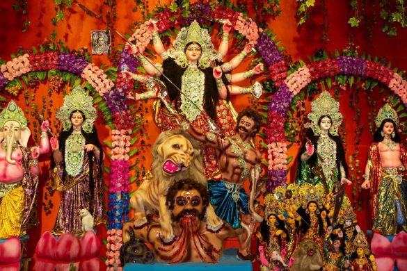

DURGA PUJA

Durga Puja also referred to as Durgotsava is an annual Hindu festival in south Asia that celebrates worship of the Hindu goddess Durga.It refers to all the six days observed as Mahalaya,Sasthi,Maha Saptami, Maha Ashtami,Maha Nabami and Vijayadashami. Durga Puja festival marks the victory of Goddess Durga over the evil buffalo deamon Mahishasura.Durga Puja is widely celebrated in the Indian states of Assam,Bihar,Jharkhand,Manipur, Odisha, Tripura and West Bengal,where it is a five-day annual holiday.